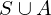

Expression of type Forall¶
from the theory of proveit.logic.sets.equivalence¶
In [1]:
import proveit
# Automation is not needed when building an expression:
proveit.defaults.automation = False # This will speed things up.
proveit.defaults.inline_pngs = False # Makes files smaller.
%load_expr # Load the stored expression as 'stored_expr'
# import Expression classes needed to build the expression
from proveit import A, S
from proveit.logic import Forall, SetEquiv, SubsetEq, Union
In [2]:
# build up the expression from sub-expressions
expr = Forall(instance_param_or_params = [S, A], instance_expr = SetEquiv(Union(S, A), S), condition = SubsetEq(A, S))
In [3]:
# check that the built expression is the same as the stored expression
assert expr == stored_expr
assert expr._style_id == stored_expr._style_id
print("Passed sanity check: expr matches stored_expr")
In [4]:
# Show the LaTeX representation of the expression for convenience if you need it.
print(stored_expr.latex())
In [5]:
stored_expr.style_options()
In [6]:
# display the expression information
stored_expr.expr_info()
| core type | sub-expressions | expression | |
|---|---|---|---|
| 0 | Operation | operator: 1 operand: 3 | |
| 1 | Literal |  | |
| 2 | ExprTuple | 3 | |
| 3 | Lambda | parameters: 13 body: 4 | |
| 4 | Conditional | value: 5 condition: 6 | |
| 5 | Operation | operator: 7 operands: 8 | |
| 6 | Operation | operator: 9 operands: 10 | |
| 7 | Literal |  | |
| 8 | ExprTuple | 11, 14 | |
| 9 | Literal |  | |
| 10 | ExprTuple | 15, 14 |  |
| 11 | Operation | operator: 12 operands: 13 |  |
| 12 | Literal |  | |
| 13 | ExprTuple | 14, 15 | |
| 14 | Variable |  | |
| 15 | Variable |  |